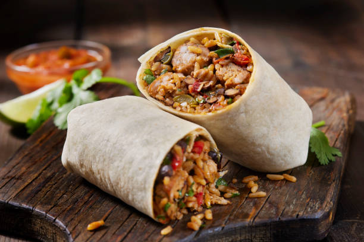

Burrito

Description
This is a recipe for the well-known dish called burrito
Although there are many variations, we chose one that is liked by many
Ingredients
- Tortillas
- Rice
- Chicken
- Hot peppers
- Tomatoes
- Put the ingredients on the tortilla
- Fold and roll up the tortilla into a burrito shape